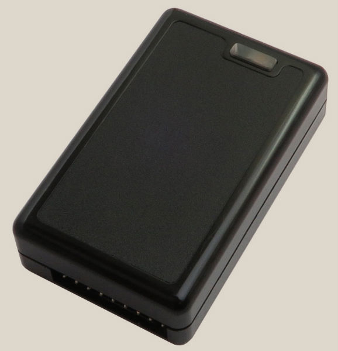

Беспроводной усилитель биопотенциалов

- 8 независимых дифференциальных канала
- Разрешение АЦП 24 бита
- Частота оцифровки до 1 кГц. Настраиваемая по каналам.
- Входной диапазон настраиваемый, до 1200 mV
- Вес 30 г. Размеры 60х35х14
- Потребление 35 mA, 3.7 В
- Формат данных: BDF / EDF
- Интерфейс связи с ПК - Bluetooth
- Индикация обрыва электродов
- Шум АЦП 3 мкВ (пик-пик) при частоте оцифровки 125 Гц
- Входное сопротивление не менее 10 мОм.
- Встроенный трехканальный акселерометр
Усилитель сделан на основе интерфейсных аппаратных средств ECG/EEG от Texas Instruments. По сути Техас Инструмен производит полностью интегрированный энцефалограф на одном кристалле, за счет чего у него малые шумы, малое потребление и малые размеры. На выходе получается уже оцифрованный сигнал, а наш усилитель - это лишь обвязка к этой микросхеме и блютус передатчик для отправки даннх на компьютер.
Для двухканального прибора используется микросхема ADS1292. Для восьмиканального прибора используется микросхема ADS1298. Более подробные характеристики можно посмотреть тут:
Прилагаемый софт пишет данные в файл в стандартном BDF формате. Предполагается, что для анализа используется сторонний софт. Для реал тайм мониторинга сигнала можно использовать программу EdfBrowser.